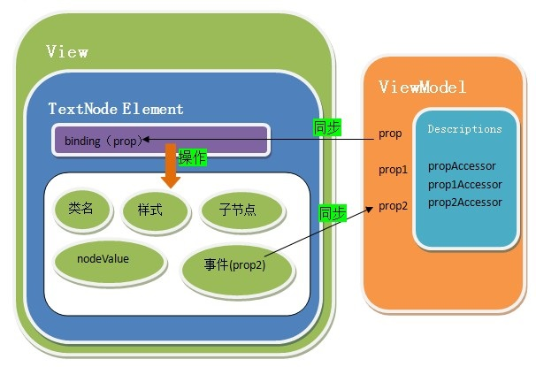

Advantage

- Easy to use, add the binding in HTML, JS using avalon.define defined in ViewModel, then call avalon.scan method, it got the moves!
- Compatible to IE6 (other mvvm framework, knockoutjs IE6, angularjs IE7, emberjs IE8, winJS IE9)
- No dependencies, only 72K, 22K compressed
- Support the pipe character style filter function, easy formatting output
- Partial refresh particle size has been refined to a text node, attribute node
- To operate the nodes on the first scan and view refresh function with bindings and cached, so there is no room for playing selector
- Let DOM manipulation code nearly extinct
- Overlapping coverage using CSS-like mechanism to allow each ViewModel partition alternately rendering the page
- Nodes removed, smart uninstall the corresponding view refresh function saves memory
- Operational data that is operating DOM, on the ViewModel synchronized operations will go to the View and Model
Structure

- API文档
- avalon.define
- avalon.mix
- ms-important与ms-controller绑定
- ms-class、 ms-hover与ms-active绑定
- ms-text, ms-html, {{text}}与{{text|html}}
- ms-model绑定
- ms-css绑定
- ms-visible绑定
- ms-include绑定
- ms-bind绑定
- $watch方法
- ms-href, ms-src, ms-alt, ms-title, ms-value绑定
- ms-disabled, ms-enabled, ms-readonly, ms-checked, ms-selected绑定
- ms-data绑定
- ms-on-*, ms-dblclick, ms-mouseout, ms-click, ms-mouseover等事件绑定
- ms-each绑定
- 日期选择器
- todos示例
- avalon路由系统
- switch组件
- slider组件
- ms-draggable绑定(以插件形式引入)
Example
<fieldset ms-controller="simple">
<legend>例子</legend>
<p>First name: <input ms-model="firstName" /></p>
<p>Last name: <input ms-model="lastName" /></p>
<p>Hello, <input ms-model="fullName"></p>
<div>{{firstName +" | "+ lastName }}</div>
<p>nick name: <input ms-model="nick.name" /></p>
<p>{{nick.name}}</p>
</fieldset>
avalon.define("simple", function(vm) {
vm.firstName = "司徒"
vm.lastName = "正美"
vm.fullName = {//一个包含set或get的对象会被当成PropertyDescriptor，
set: function(val) {//set, get里面的this不能改成vm
var array = (val || "").split(" ");
this.firstName = array[0] || "";
this.lastName = array[1] || "";
},
get: function() {
return this.firstName + " " + this.lastName;
}
},
vm.nick = {
name: "暗黑之民"
}
});
Website
- Website：http://openstack.unitedstack.com
- chinese websitehttp://openstack.ustack.com/
License
Project is released under a MIT license.